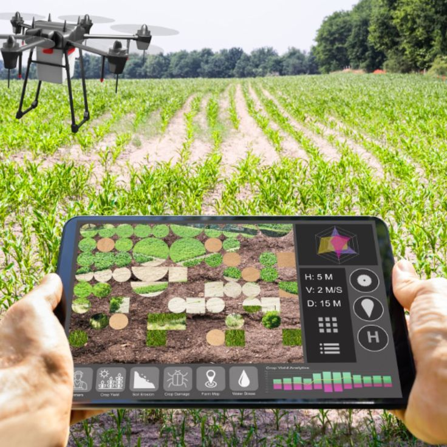

01
AI Disease Detection
Analyze crop images to identify visible symptoms before infections spread across the field.
AI for healthier harvests
Detect crop diseases early, simulate autonomous field monitoring, and optimize treatment decisions using artificial intelligence.

Autonomous field monitoring
Drone-assisted scouting connected to AI crop health decisions.
Platform capabilities
SmartAI connects field observations, AI predictions, and treatment decisions in one workflow that can grow into robotics integration.
Analyze crop images to identify visible symptoms before infections spread across the field.
Model autonomous monitoring routes and field zones for future robot-assisted scouting.
Recommend targeted treatment actions based on disease type, severity, and affected area.
Track trends across detections, treatment history, crop health, and field performance.
How it works
Submit crop images from a phone, extension officer visit, or monitoring workflow.
AI evaluates visual symptoms and estimates the disease risk level.
The platform translates results into practical intervention options.
Farm teams apply targeted treatment and keep a history for future analysis.
Why SmartAI matters
Many farms lose yield because visible disease symptoms are noticed late, treatment is applied broadly, and historical crop health data is scattered across notebooks, phone galleries, and field visits.
SmartAI supports precision agriculture by turning crop observations into structured decisions. Farmers get earlier warnings, researchers get cleaner field intelligence, and extension officers can support more farms with consistent guidance.
The roadmap includes autonomous robot integration, where simulated monitoring routes can evolve into real field scouting, targeted spraying, and continuous crop health reporting.
Build smarter farm decisions